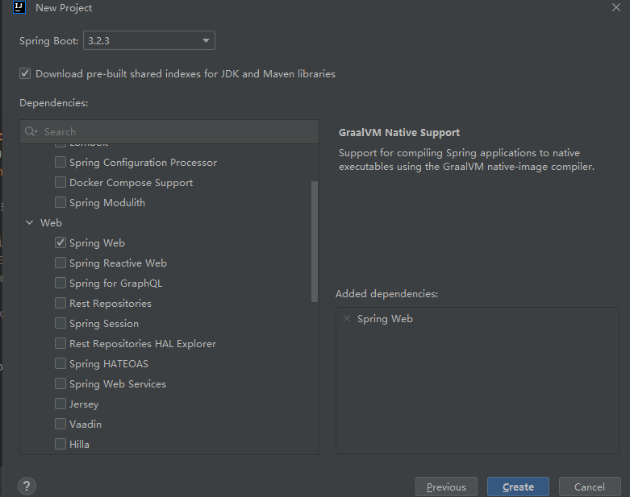

# SpringBoot 简介
SpringBoot 是由 Pivotal 团队提供的全新框架，其设计目的是用来简化 Spring 应用的初始搭建以及开发过程。
使用了 Spring 框架后已经简化了我们的开发。而 SpringBoot 又是对 Spring 开发进行简化的，可想而知 SpringBoot 使用的简单及广泛性。既然 SpringBoot 是用来简化 Spring 开发的，那我们就先回顾一下，以 SpringMVC 开发为例：
- 创建工程，并在
pom.xml配置文件中配置所依赖的坐标
<dependencies> | |
<dependency> | |
<groupId>org.springframework</groupId> | |
<artifactId>spring-webmvc</artifactId> | |
<version>5.2.10.RELEASE</version> | |
</dependency> | |
<dependency> | |
<groupId>org.springframework</groupId> | |
<artifactId>spring-jdbc</artifactId> | |
<version>5.2.10.RELEASE</version> | |
</dependency> | |
<dependency> | |
<groupId>org.springframework</groupId> | |
<artifactId>spring-test</artifactId> | |
<version>5.2.10.RELEASE</version> | |
</dependency> | |
<dependency> | |
<groupId>org.mybatis</groupId> | |
<artifactId>mybatis</artifactId> | |
<version>3.5.6</version> | |
</dependency> | |
<dependency> | |
<groupId>org.mybatis</groupId> | |
<artifactId>mybatis-spring</artifactId> | |
<version>1.3.0</version> | |
</dependency> | |
<dependency> | |
<groupId>mysql</groupId> | |
<artifactId>mysql-connector-java</artifactId> | |
<version>5.1.46</version> | |
</dependency> | |
<dependency> | |
<groupId>com.alibaba</groupId> | |
<artifactId>druid</artifactId> | |
<version>1.1.16</version> | |
</dependency> | |
<dependency> | |
<groupId>junit</groupId> | |
<artifactId>junit</artifactId> | |
<version>4.12</version> | |
<scope>test</scope> | |
</dependency> | |
<dependency> | |
<groupId>javax.servlet</groupId> | |
<artifactId>javax.servlet-api</artifactId> | |
<version>3.1.0</version> | |
<scope>provided</scope> | |
</dependency> | |
<dependency> | |
<groupId>com.fasterxml.jackson.core</groupId> | |
<artifactId>jackson-databind</artifactId> | |
<version>2.9.0</version> | |
</dependency> | |
</dependencies> |
- 编写
web3.0的配置类
作为web程序，web3.0的配置类不能缺少，而这个配置类还是比较麻烦的，代码如下
public class ServletContainersInitConfig extends AbstractAnnotationConfigDispatcherServletInitializer { | |
protected Class<?>[] getRootConfigClasses() { | |
return new Class[]{SpringConfig.class}; | |
} | |
protected Class<?>[] getServletConfigClasses() { | |
return new Class[]{SpringMvcConfig.class}; | |
} | |
protected String[] getServletMappings() { | |
return new String[]{"/"}; | |
} | |
@Override | |
protected Filter[] getServletFilters() { | |
CharacterEncodingFilter filter = new CharacterEncodingFilter(); | |
filter.setEncoding("utf-8"); | |
return new Filter[]{filter}; | |
} | |
} |
- 编写
SpringMVC的配置类
@Configuration | |
@ComponentScan("com.blog.controller") | |
@EnableWebMvc | |
public class SpringMvcConfig implements WebMvcConfigurer { | |
} |
做到这只是将工程的架子搭起来。要想被外界访问，最起码还需要提供一个 Controller 类，在该类中提供一个方法。
- 编写
Controller类
@RestController | |
@RequestMapping("/books") | |
public class BookController { | |
@Autowired | |
private BookService bookService; | |
@PostMapping | |
public boolean save(@RequestBody Book book) { | |
return bookService.save(book); | |
} | |
@PutMapping | |
public boolean update(@RequestBody Book book) { | |
return bookService.update(book); | |
} | |
@DeleteMapping("/{id}") | |
public boolean delete(@PathVariable Integer id) { | |
return bookService.delete(id); | |
} | |
@GetMapping("/{id}") | |
public Book getById(@PathVariable Integer id) { | |
return bookService.getById(id); | |
} | |
@GetMapping | |
public List<Book> getAll() { | |
return bookService.getAll(); | |
} | |
} |
从上面的 SpringMVC 程序开发可以看到，前三步都是在搭建环境，而且这三步基本都是固定的。 SpringBoot 就是对这三步进行简化了。接下来我们通过一个入门案例来体现 SpingBoot 简化 Spring 开发。
# SpringBoot 入门案例
# 开发步骤
SpringBoot 开发起来特别简单，分为如下几步：
- 创建新模块，选择 Spring 初始化，并配置模块相关基础信息
- 选择当前模块需要使用的技术集
- 开发控制器类
- 运行自动生成的 Application 类
# 创建新模块
- 在 IDEA 下创建一个新模块，选择 Spring Initializr，用来创建 SpringBoot 工程
以前我们选择的是Maven，今天选择Spring Initializr来快速构建SpringBoot工程。而在Module SDK这一项选择我们安装的JDK版本。
- 对
SpringBoot工程进行相关的设置
我们使用这种方式构建的SpringBoot工程其实也是Maven工程，而该方式只是一种快速构建的方式而已。注意：打包方式这里需要设置为
Jar - 选中
Web，然后勾选Spring Web
最后点击创建，就大功告成了，经过以上步骤后就创建了如下结构的模块，它会帮我们自动生成一个Application类，而该类一会再启动服务器时会用到


跑的时候又遇到了 JDK 版本问题，但 xml 有改配置，应该是 Spring Boot的版本和Java版本不兼容 的问题，查了一下 Spring Boot 3.0.4支持的最低Java 版本为JDK 17 ，应选择更低的版本即可
参考
# 创建 Controller
在 com.zy.controller 包下创建 BookController ，代码如下：
@RestController | |
@RequestMapping("/books") | |
public class BookController { | |
@GetMapping("/{id}") | |
public String getById(@PathVariable Integer id){ | |
System.out.println("id ==> "+id); | |
return "hello , spring boot!"; | |
} | |
} |
# 启动服务器
运行 SpringBoot 工程不需要使用本地的 Tomcat 和 插件，只运行项目 com.zy 包下的 Application 类，我们就可以在控制台看出如下信息
# 进行测试
依旧是使用 PostMan 来测试，发送 GET 请求访问 localhost:8080/books/123
可以看到响应回来的结果 hello,spring boot!
同时控制台也输出了 get id ==> 123
通过上面的入门案例我们可以看到使用 SpringBoot 进行开发，使整个开发变得很简单，那它是如何做到的呢？
要研究这个问题，我们需要看看 Application 类和 pom.xml 都书写了什么。先看看 Applicaion 类，该类内容如下：
@SpringBootApplication | |
public class Application { | |
public static void main(String[] args) { | |
SpringApplication.run(Application.class, args); | |
} | |
} |
这个类中的东西很简单，就在类上添加了一个 @SpringBootApplication 注解，而在主方法中就一行代码。我们在启动服务器时就是执行的该类中的主方法。
再看看 pom.xml 配置文件中的内容
<?xml version="1.0" encoding="UTF-8"?> | |
<project xmlns="http://maven.apache.org/POM/4.0.0" xmlns:xsi="http://www.w3.org/2001/XMLSchema-instance" | |
xsi:schemaLocation="http://maven.apache.org/POM/4.0.0 https://maven.apache.org/xsd/maven-4.0.0.xsd"> | |
<modelVersion>4.0.0</modelVersion> | |
<!-- 指定了一个父工程，父工程中的东西在该工程中可以继承过来使用 --> | |
<parent> | |
<groupId>org.springframework.boot</groupId> | |
<artifactId>spring-boot-starter-parent</artifactId> | |
<version>2.5.0</version> | |
</parent> | |
<groupId>com.zy</groupId> | |
<artifactId>springboot_01_quickstart</artifactId> | |
<version>0.0.1-SNAPSHOT</version> | |
<!--JDK 的版本 --> | |
<properties> | |
<java.version>8</java.version> | |
</properties> | |
<dependencies> | |
<!-- 该依赖就是我们在创建 SpringBoot 工程勾选的那个 Spring Web 产生的 --> | |
<dependency> | |
<groupId>org.springframework.boot</groupId> | |
<artifactId>spring-boot-starter-web</artifactId> | |
</dependency> | |
<!-- 这个是单元测试的依赖，我们现在没有进行单元测试，所以这个依赖现在可以没有 --> | |
<dependency> | |
<groupId>org.springframework.boot</groupId> | |
<artifactId>spring-boot-starter-test</artifactId> | |
<scope>test</scope> | |
</dependency> | |
</dependencies> | |
<build> | |
<plugins> | |
<!-- 这个插件是在打包时需要的，而这里暂时还没有用到 --> | |
<plugin> | |
<groupId>org.springframework.boot</groupId> | |
<artifactId>spring-boot-maven-plugin</artifactId> | |
</plugin> | |
</plugins> | |
</build> | |
</project> |
我们代码之所以能简化，就是因为指定的父工程和 Spring Web 依赖实现的。具体的我们后面在聊。
# 对比
做完 SpringBoot 的入门案例后，接下来对比一下 Spring 程序和 SpringBoot 程序。如下图
坐标
Spring程序中的坐标需要自己编写，而且坐标非常多SpringBoot程序中的坐标是我们在创建工程时进行勾选自动生成的web3.0 配置类
Spring程序需要自己编写这个配置类。这个配置类大家之前编写过，肯定感觉很复杂SpringBoot程序不需要我们自己书写配置类
Spring/SpringMVC程序的配置类需要自己书写。而SpringBoot程序则不需要书写。
注意：基于 Idea 的
Spring Initializr快速构建SpringBoot工程时需要联网。
# 官网构建工程
在入门案例中之所以能快速构建 SpringBoot 工程，是因为 Idea 使用了官网提供了快速构建 SpringBoot 工程的组件实现的。那如何在官网进行工程构建呢？通过如下步骤构建
进入 SpringBoot 官网
官网地址如下：
https://spring.io/projects/spring-boot
进入到 SpringBoot 官网后拖到最下方就可以看到如下内容
然后点击 Spring Initializr 超链接就会跳转到如下页面

这个页面内容是不是感觉很眼熟的，这和我们使用 Idea 快速构建 SpringBoot 工程的界面基本相同。在上面页面输入对应的信息
# 1.1.3.2 选择依赖
选择 Spring Web 可以点击上图右上角的 ADD DEPENDENCIES... CTRL + B 按钮，就会出现如下界面

# 1.1.3.3 生成工程
以上步骤完成后就可以生成 SpringBoot 工程了。在页面的最下方点击 GENERATE CTRL + 回车 按钮生成工程并下载到本地，如下图所示

打开下载好的压缩包可以看到工程结构和使用 Idea 生成的一模一样，如下图
而打开 pom.xml 文件，里面也包含了父工程和 Spring Web 的依赖。
通过上面官网的操作，我们知道 Idea 中快速构建 SpringBoot 工程其实就是使用的官网的快速构建组件，那以后即使没有 Idea 也可以使用官网的方式构建 SpringBoot 工程。
# SpringBoot 工程快速启动
# 1.1.4.1 问题导入
以后我们和前端开发人员协同开发，而前端开发人员需要测试前端程序就需要后端开启服务器，这就受制于后端开发人员。为了摆脱这个受制，前端开发人员尝试着在自己电脑上安装 Tomcat 和 Idea ，在自己电脑上启动后端程序，这显然不现实。
我们后端可以将 SpringBoot 工程打成 jar 包，该 jar 包运行不依赖于 Tomcat 和 Idea 这些工具也可以正常运行，只是这个 jar 包在运行过程中连接和我们自己程序相同的 Mysql 数据库即可。这样就可以解决这个问题，如下图
那现在问题是如何打包呢？
# 1.1.4.2 打包
由于我们在构建 SpringBoot 工程时已经在 pom.xml 中配置了如下插件
<plugin> | |
<groupId>org.springframework.boot</groupId> | |
<artifactId>spring-boot-maven-plugin</artifactId> | |
</plugin> |
所以我们只需要使用 Maven 的 package 指令打包就会在 target 目录下生成对应的 Jar 包。
注意：该插件必须配置，不然打好的
jar包也是有问题的。
# 1.1.4.3 启动
进入 jar 包所在位置，在 命令提示符 中输入如下命令
jar -jar springboot_01_quickstart-0.0.1-SNAPSHOT.jar |
执行上述命令就可以看到 SpringBoot 运行的日志信息
# SpringBoot 概述
SpringBoot 是由 Pivotal 团队提供的全新框架，其设计目的是用来简化 Spring 应用的初始搭建以及开发过程。
大家已经感受了 SpringBoot 程序，回过头看看 SpringBoot 主要作用是什么，就是简化 Spring 的搭建过程和开发过程。
原始 Spring 环境搭建和开发存在以下问题：
- 配置繁琐
- 依赖设置繁琐
SpringBoot 程序优点恰巧就是针对 Spring 的缺点
- 自动配置。这个是用来解决
Spring程序配置繁琐的问题 - 起步依赖。这个是用来解决
Spring程序依赖设置繁琐的问题 - 辅助功能（内置服务器，...）。我们在启动
SpringBoot程序时既没有使用本地的tomcat也没有使用tomcat插件，而是使用SpringBoot内置的服务器。
接下来我们来说一下 SpringBoot 的起步依赖
# 起步依赖
我们使用 Spring Initializr 方式创建的 Maven 工程的的 pom.xml 配置文件中自动生成了很多包含 starter 的依赖，如下图
这些依赖就是启动依赖，接下来我们探究一下他是如何实现的。
# 探索父工程
从上面的文件中可以看到指定了一个父工程，我们进入到父工程，发现父工程中又指定了一个父工程，如下图所示
再进入到该父工程中，在该工程中我们可以看到配置内容结构如下图所示
上图中的 properties 标签中定义了各个技术软件依赖的版本，避免了我们在使用不同软件技术时考虑版本的兼容问题。在 properties 中我们找 servlet 和 mysql 的版本如下图
dependencyManagement 标签是进行依赖版本锁定，但是并没有导入对应的依赖；如果我们工程需要那个依赖只需要引入依赖的 groupid 和 artifactId 不需要定义 version 。
而 build 标签中也对插件的版本进行了锁定，如下图
看完了父工程中 pom.xml 的配置后不难理解我们工程的的依赖为什么都没有配置 version 。
# 探索依赖
在我们创建的工程中的 pom.xml 中配置了如下依赖
进入到该依赖，查看 pom.xml 的依赖会发现它引入了如下的依赖
里面的引入了 spring-web 和 spring-webmvc 的依赖，这就是为什么我们的工程中没有依赖这两个包还能正常使用 springMVC 中的注解的原因。
而依赖 spring-boot-starter-tomcat ，从名字基本能确认内部依赖了 tomcat ，所以我们的工程才能正常启动。
结论：以后需要使用技术，只需要引入该技术对应的起步依赖即可
# 小结
starter
SpringBoot中常见项目名称，定义了当前项目使用的所有项目坐标，以达到减少依赖配置的目的
parent
所有
SpringBoot项目要继承的项目，定义了若干个坐标版本号（依赖管理，而非依赖），以达到减少依赖冲突的目的spring-boot-starter-parent（2.5.0）与spring-boot-starter-parent（2.4.6）共计 57 处坐标版本不同
实际开发
使用任意坐标时，仅书写 GAV 中的 G 和 A，V 由 SpringBoot 提供
G：groupid
A：artifactId
V：version
如发生坐标错误，再指定 version（要小心版本冲突）
# 程序启动
创建的每一个 SpringBoot 程序时都包含一个类似于下面的类，我们将这个类称作引导类
@SpringBootApplication | |
public class Springboot01QuickstartApplication { | |
public static void main(String[] args) { | |
SpringApplication.run(Springboot01QuickstartApplication.class, args); | |
} | |
} |
注意：
SpringBoot在创建项目时，采用 jar 的打包方式SpringBoot的引导类是项目的入口，运行main方法就可以启动项目因为我们在
pom.xml中配置了spring-boot-starter-web依赖，而该依赖通过前面的学习知道它依赖tomcat，所以运行main方法就可以使用tomcat启动咱们的工程。
# 切换 web 服务器
现在我们启动工程使用的是 tomcat 服务器，那能不能不使用 tomcat 而使用 jetty 服务器， jetty 在我们 maven 高级时讲 maven 私服使用的服务器。而要切换 web 服务器就需要将默认的 tomcat 服务器给排除掉，怎么排除呢？使用 exclusion 标签
<dependency> | |
<groupId>org.springframework.boot</groupId> | |
<artifactId>spring-boot-starter-web</artifactId> | |
<exclusions> | |
<exclusion> | |
<artifactId>spring-boot-starter-tomcat</artifactId> | |
<groupId>org.springframework.boot</groupId> | |
</exclusion> | |
</exclusions> | |
</dependency> |
现在我们运行引导类可以吗？运行一下试试，打印的日志信息如下

程序直接停止了，为什么呢？那是因为排除了 tomcat 服务器，程序中就没有服务器了。所以此时不光要排除 tomcat 服务器，还要引入 jetty 服务器。在 pom.xml 中因为 jetty 的起步依赖
<dependency> | |
<groupId>org.springframework.boot</groupId> | |
<artifactId>spring-boot-starter-jetty</artifactId> | |
</dependency> |
接下来再次运行引导类，在日志信息中就可以看到使用的是 jetty 服务器

小结：
通过切换服务器，我们不难发现在使用 SpringBoot 换技术时只需要导入该技术的起步依赖即可。